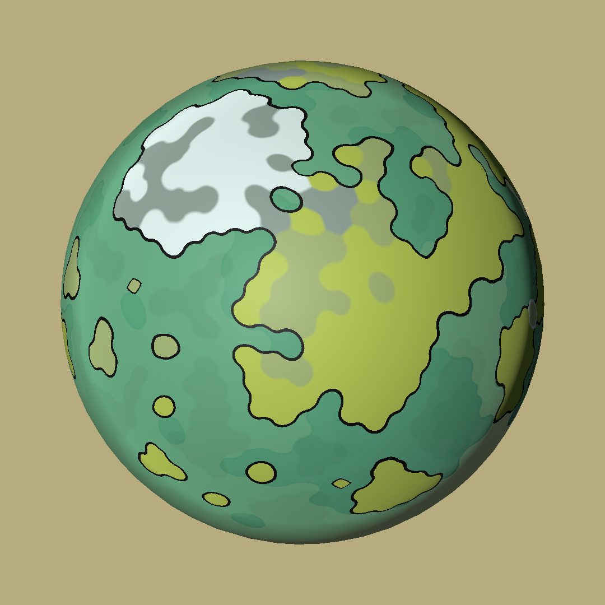

Oskar Ståhlberg has talked at length about the maths of Townscaper's organic grids. James Ryan and Mark R. Johnson offer insight on generating in-game languages. Writing my own Master's dissertation on emergent narrative, I'd come across techniques like these, but there just wasn't the space for them in the finished project; Lingua Franca is my excuse to finally try and implement them myself...
Made With Unity, C#.Controls WASD to rotate globe. LMB to add land, RMB to destroy it; hold LCTRL to select an entire landmass at once. SPACE will generate a new planet.
As I say, I'm making this for my own entertainment - it's an on-going exercise in researching, adapting and optimising procgen techniques, as I try and fit them all in one place. So far, I've got the above world editor toy up and running, but I still don't know the final shape Lingua Franca is going to take.
First, the coordinate system. Setting this up was quite straightforward, a matter of adapting Daniel Anderson's tutorial on generating organic grids from a 2D plane to a sphere.
Poisson disk sampling distributes vertices over the sphere, spacing these out by arc length instead of Euclidean distance. My rule of thumb here is that a Poisson sampling over any surface should surely use that surface's geodesic lengths as its distance metric (though calculating geodesics might be significantly more expensive in the general case...).
Triangulation is surprisingly easy. The vertices can be stereographically projected onto a plane, connected using a standard Delauney triangulation, then mapped back onto a sphere. Red Blob Games' tutorial better addresses the subtleties of this procedure, but the long and short of it is we end up with an organic, spherical grid. This can further be subdivided and relaxed, much like John Wigg does with a static mesh in SphereScaper.
Each node on the grid carries a landmass value, representing a region of either land or sea. Lingua Franca (and the above world editor demo), assigns landmass with the following algorithm:
Constants like the latitude of the Arctic circle, the number of continents, etc., were only arrived at with trial and error, but they successfully create worlds more archipelagic than our own.

I'd originally thought wave function collapse could be used to build up landmasses, but it just wasn't well-suited to the global constraints detailed above. The technique is much more appropriate to assigning biomes post-hoc, colouring tiles by local constraints like 'deserts must be landlocked', 'tundras cannot be adjacent to rainforests', etc. A trivial implementation of this can be seen in the demo, but I plan to add much more nuance in the future.